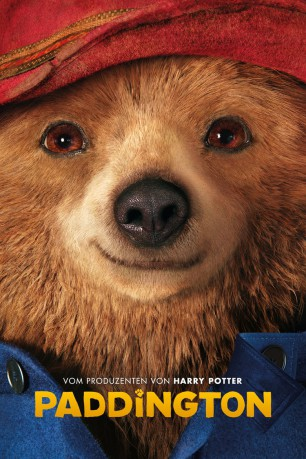
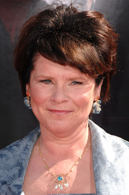
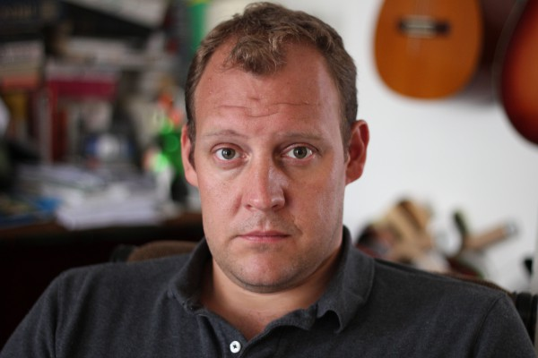
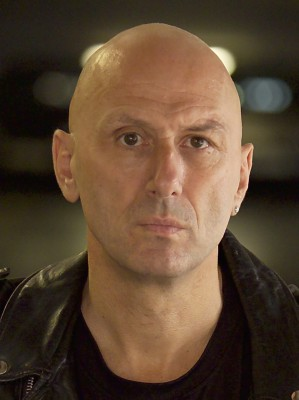
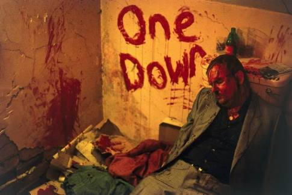
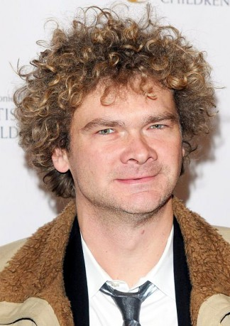

#817 Paddington
 gesehen am 06.05.2015
gesehen am 06.05.2015
 
 IMDB-Wertung: 7.2 / 10
IMDB-Wertung: 7.2 / 10  Metascore: 77
Metascore: 77 
Der Bär Paddington kommt aus Peru und ist ein großer Großbritannien-Fan, da seine Tante Lucy einst einen englischen Abenteurer kennengelernt und ihre Begeisterung an Paddington weitergegeben hatte. Ganz besonders hat es Paddington die englische Marmelade angetan. Nach einem zerstörerischen Erbeben in Peru schmuggelt Lucy den kleinen Paddington auf ein Schiff, das nach England fährt. Lucy vertraut in die Freundlichkeit Fremder und schickt Paddington lediglich mit einem Schild mit der Aufschrift “Bitte kümmern Sie sich um diesen Bären. Danke.” auf die weite Reise.
Jahr: 2014
Dauer: 95 Minuten
FSK: 0
Land: England Studio: StudioCanalTonspuren: DTS - ,
Untertitel: Deutsch,
Auflösung: 1080p (1920x800) Größe: 4986 MB
Genre: Abenteuer, Komödie, Familie, Fantasy
Regisseur: Paul King
Drehbuch: Paul King, Hamish McColl, Paul King, Michael Bond
Soundtrack: Nick Urata
Darsteller:
 Tim Downie als Montgomery Clyde
Tim Downie als Montgomery Clyde Geoffrey Palmer als Head Geographer
Geoffrey Palmer als Head Geographer-  Imelda Staunton als Aunt Lucy
 Michael Gambon als Uncle Pastuzo
Michael Gambon als Uncle Pastuzo Ben Whishaw als Paddington
Ben Whishaw als Paddington- Hugh Bonneville als Henry Brown
 Sally Hawkins als Mary Brown
Sally Hawkins als Mary Brown- Samuel Joslin als Jonathan Brown
- Matt Lucas als Joe
 Julie Walters als Mrs Bird
Julie Walters als Mrs Bird- Jude Wright als Tony
- Kayvan Novak als Grant
 Nicole Kidman als Millicent
Nicole Kidman als Millicent- Peter Capaldi als Mr Curry
 Jim Broadbent als Mr Gruber
Jim Broadbent als Mr Gruber- Mary Roscoe als Master Gruber's Aunt
 Matt King als Andre the Thief
Matt King als Andre the Thief- Dominic Coleman als Policeman
 Steve Oram als Paddington Station Security Guard
Steve Oram als Paddington Station Security Guard- Tom Meeten als Paddington Station Security Guard
 Alice Lowe als Geographers' Guild Receptionist
Alice Lowe als Geographers' Guild Receptionist Will Smith als Geographer, Present Day
Will Smith als Geographer, Present Day-  Justin Edwards als Desk Sergeant
- James Bachman als Sixth Geographer
- Ancuta Breaban als Commuter #2 , uncredited
- Asim Chaudhry als Security Guard , uncredited
- Bern Collaco als Police Officer , uncredited
-  Gary Douglas als Motorcyclist , uncredited
- Nigel Genis als Station Blocker , uncredited
- Shaz Lancaster als Portobello Market shopper , uncredited
 Elyas M'Barek als Paddington , uncredited
Elyas M'Barek als Paddington , uncredited-  George Newton als Angel , uncredited
- Julie Vollono als Commuter #8 , uncredited
- Vic Waghorn als Additional Voices , uncredited
 Daniel Westwood als Servant , uncredited
Daniel Westwood als Servant , uncredited- Madeleine Worrall als Agatha Clyde
- Lottie Steer als Young Millicent
- Theresa Watson als Stenographer
- Madeleine Harris als Judy Brown
- Michael Bond als Kindly Gentleman
- Eddie Nestor als Underground Ticket Inspector
- Iain Mitchell als Dog Owner
- Jonathan Derbyshire als Master Gruber
- Llewella Gideon als Class Teacher
- Tarik Blake als Pupil
- Ross Boatman als Trader
-  Simon Farnaby als Barry
- Toby Williams als Geographer, Present Day
- Catherine Shepherd als Geographer, Present Day
- Javier Marzan als Buckingham Palace Sentry
Datei: X:\Kinder Collections\Paddington\Paddington (2014, FSKo.Al., 1920x800).mkv seit 28.03.2015
Festplatte: Kinder-Filme+Trick
 Alle Filme aus Gruppe 'Kinder Collections\Paddington'
Alle Filme aus Gruppe 'Kinder Collections\Paddington'